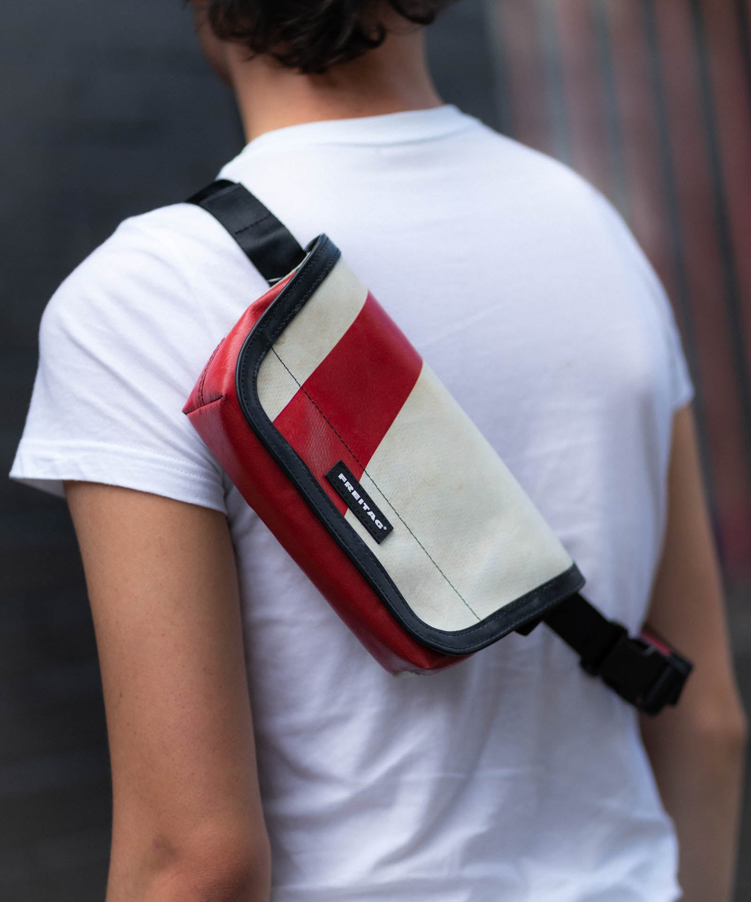

Du sac messenger classique aux housses pour ordinateurs portables, porte-monnaie et autres pochettes, sans oublier les indémodables que sont le sac à dos, le sac en bandoulière, le sac de courses et la banane : FREITAG crée des pièces uniques durables, hydrofuges et réparables. Nos produits sont constitués en grande partie de matériaux upcyclés, déclassés et recyclés. Certains d’entre eux sont même circulaires. Nous offrons une deuxième vie à des bâches de camion usagées, des ceintures de sécurité déclassées, des bouteilles en PET ou encore de vieilles chaussures de ski, qui reviennent à la vie sous la forme d’accessoires robustes et polyvalents.
